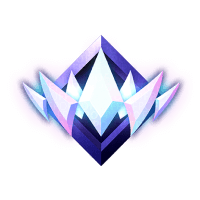

Moim hobby jest granie w gry, zwłaszcza FORTNITE oraz VALORANT, lecz ja skupie się tutaj na Fortnite.
Czym jest FORTNITE? Jak w niego grać?
Fortnite Battle Royale – komputerowa gra wieloosobowa z trybem rozgrywki battle royale opracowana i wydana przez Epic Games 26 września 2017 na platformy Windows, PlayStation 4 i Xbox One, w 2018 roku na iOS, Nintendo Switch i Android. W 2020 wydano wersje na konsole Xbox Series X/S i PlayStation 5. Gra jest dystrybuowana za pośrednictwem dystrybucji cyfrowej w modelu free-to-play
.W Fortnite są różne tryby:
-Zwykłe Battle Royale oraz Zero Budowania (tzw casuale)
-Tryby rankingowe z budowaniem oraz bez (Areny zostały przez nie zastąpione)
-Tryb kreatywny, gdzie gracze tworzą co tylko zechcą
Tryby Battle Royale oraz zero budowania
W trybie zarówno Battle Royale jak i Zero Budowanie chodzi o wyeliminowanie pozostałych 99 graczy, z tą różnicą, że w Zero Budowania budowanie jest wyłączone. Oba tryby są podzielone na: Solo, Pary, Trio i Oddziały
Budowanie
Poniżej przedstawienie kilku podstawowych budowli:
-90s (dziewięćdziesiątka)
-Penta edit
Tryby rankingowe
W nowych trybach rankingowych chodzi mniej więcej o to, o co chodziło w starych Arenach, trzeba zajmować jak najwyższe pozycje oraz zdobywać likwidacje na innych graczach. Wszystkie rangi znajdują się poniżej:
-BRONZ I, II, III
-SREBRO I, II, III
-ZŁOTO I, II, III
-PLATYNA I, II, III
-DIAMENT I, II, III
-ELITA
-CZEMPION
-UNREAL
.jpg)
Turnieje
W Fortnite są turnieje, na których można zarobić prawdziwe pieniądze (earningsy) oraz zdobyć PR (Power Ranking), ale aby je grać trzeba mieć rangę min. Platyna I. A oto kilka podstawowych turniejów:
-Solo Victory Cash Cup
-ZB Trios Vicoty Cash Cup
-Duos Cash Cup
Power Ranking (PR)
PR nie ma właściwie praktycznego zastosowania poza pokazaniem jak dobry jest gracz. Najlepszy gracz semi pro w polsce Piotr Sugar (Sugar, Sugar BOT) ma 200 PR ale czuje jakby grał na 2400. Inny polski gracz Kazama5 na swoim Twitchu rozdaje bany adekwatne do ilości PR (mniej PR = dłuższy ban)
Sklep Fortnite
W sklepie można kupować różne skiny, plecaki, zbieraki, lotnie, emotki, pakiety (niektóre za prawdziwe pieniądze m. in Ekipaka), malowania broni, pakiety muzyczne oraz walutę nazywaną V-DOLCAMI (również za prawdziwe pieniądze), za którą kupujemy elementy kosmetyczne. V-dolce można również zdobyć w karnecie bojowym za darmo (zazwyczaj 300 v-dolców).